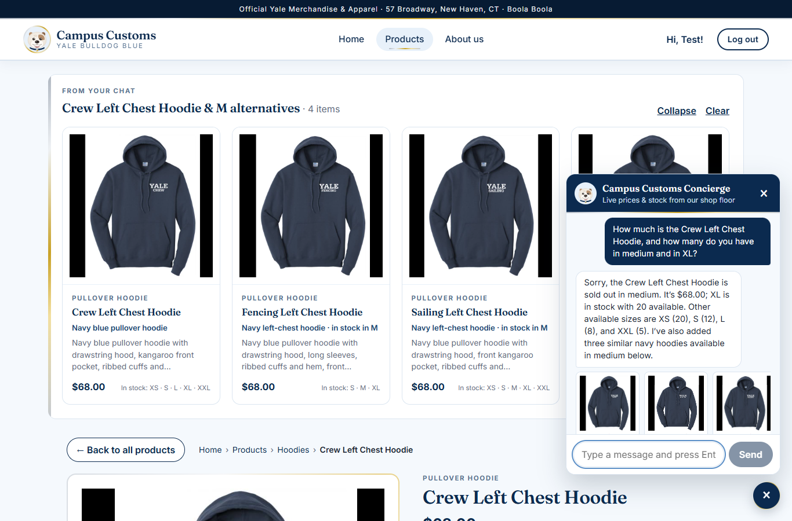
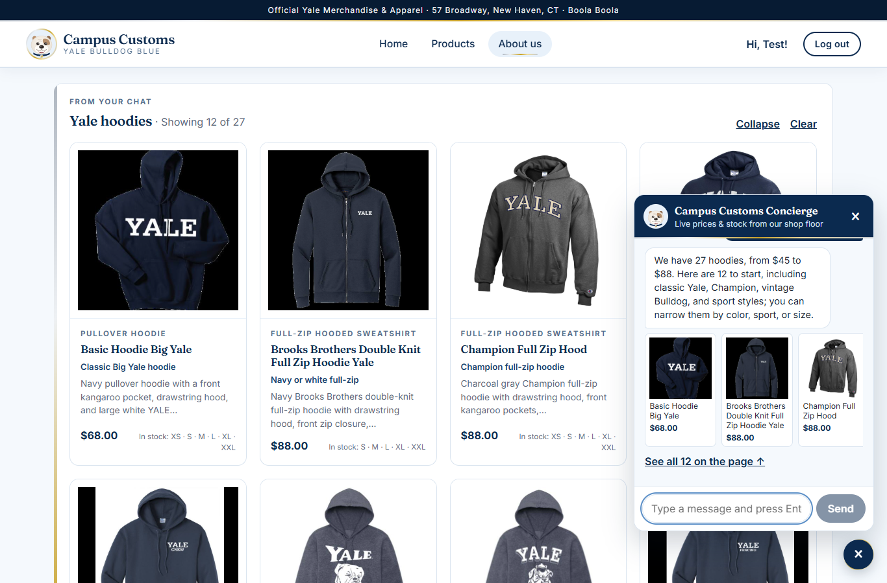
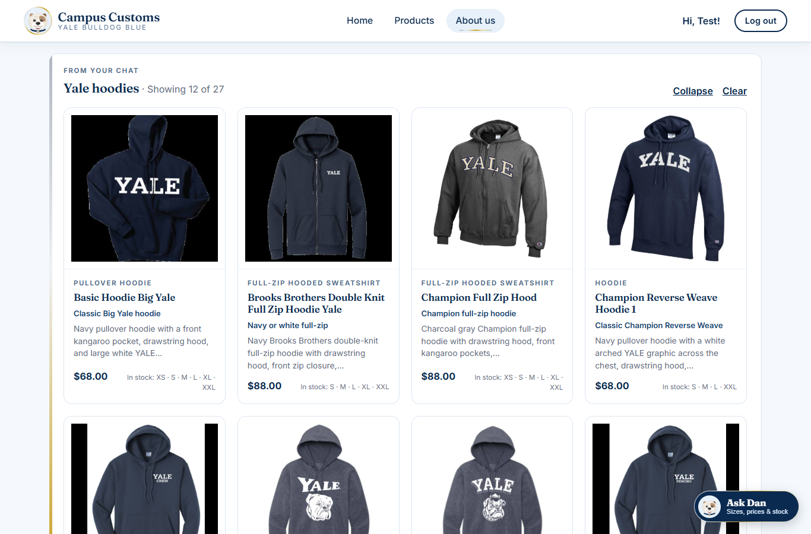
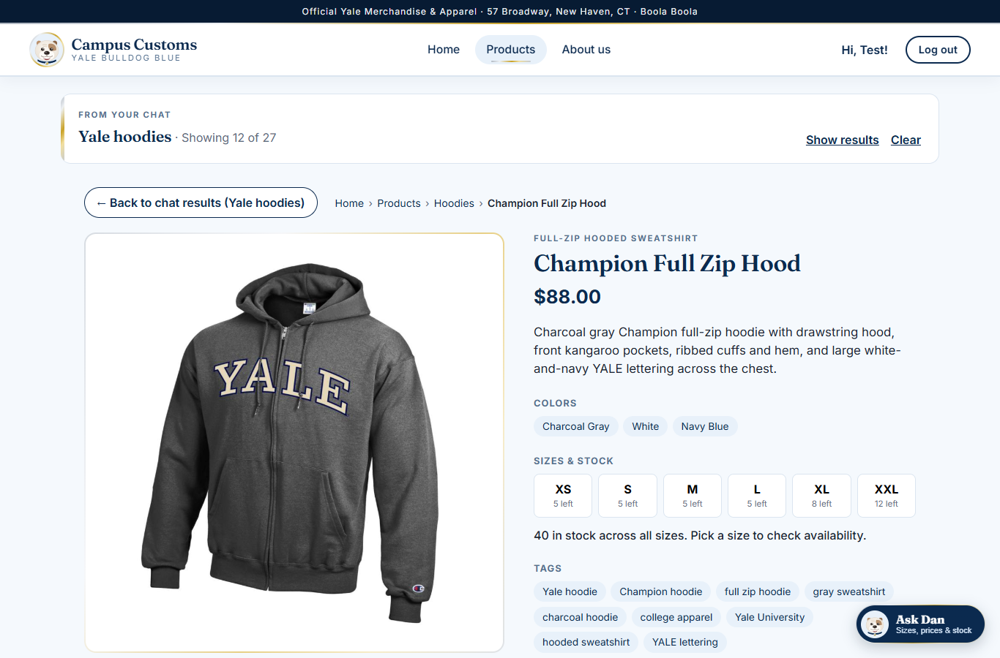
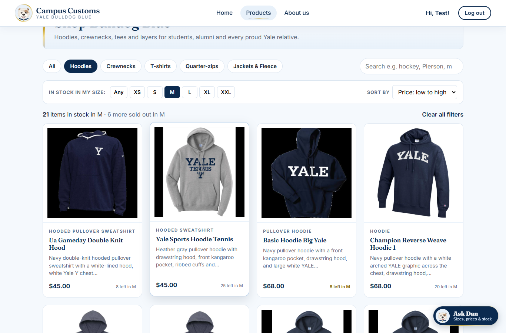
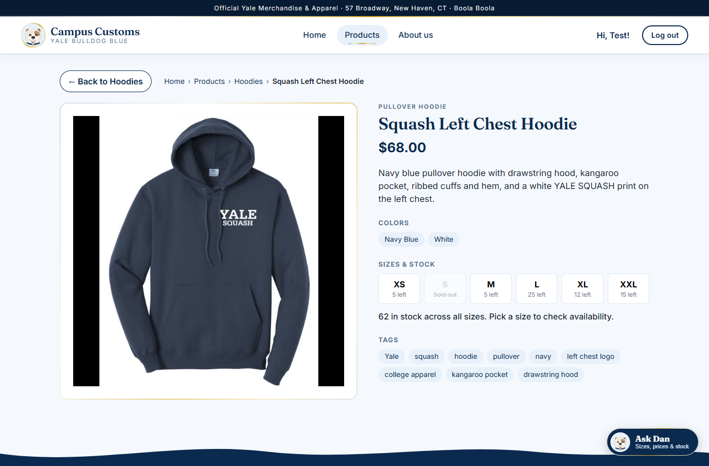
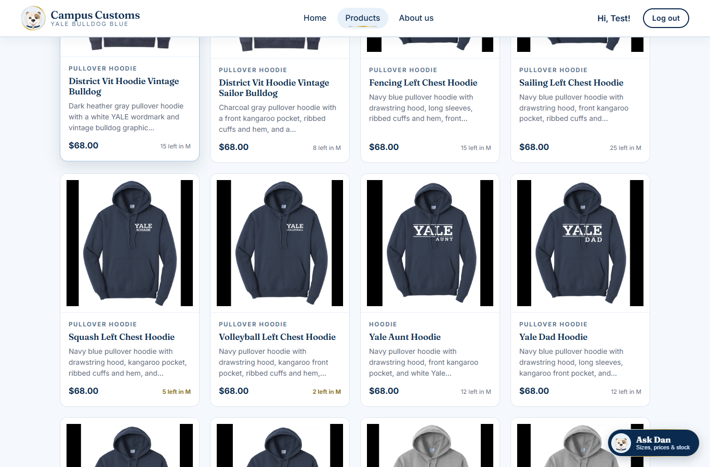

Check 1 — Chat checks an item's inventory level PASS
On the Crew Left Chest Hoodie product page, the shopper asked the chat about price and stock in two sizes.
Shopper: How much is the Crew Left Chest Hoodie, and how many do you have in medium and in XL?
Assistant: Sorry, the Crew Left Chest Hoodie is sold out in medium. It’s $68.00; XL is in stock with 20 available. Other available sizes are XS (20), S (12), L (8), and XXL (5). I’ve also added three similar navy hoodies available in medium below.
Assistant: Sorry, the Crew Left Chest Hoodie is sold out in medium. It’s $68.00; XL is in stock with 20 available. Other available sizes are XS (20), S (12), L (8), and XXL (5). I’ve also added three similar navy hoodies available in medium below.

catalogue and inventory tables below, so nothing was invented.
Database:
inventory for crew-left-chest-hoodie (price in catalogue: $68.00)
| Size | Quantity | Status |
|---|---|---|
| XS | 20 | In stock |
| S | 12 | In stock |
| M | 0 | Sold out |
| L | 8 | In stock |
| XL | 20 | In stock |
| XXL | 5 | In stock |
Database: the chat was saved to
chat_messages (logged-in user id 1)
| id | role | content | created_at |
|---|---|---|---|
| 41 | user | How much is the Crew Left Chest Hoodie, and how many do you have in medium and i… | 2026-09-27 14:33:12 |
| 42 | assistant | Sorry, the Crew Left Chest Hoodie is sold out in medium. It’s $68.00; XL is in s… | 2026-09-27 14:33:12 |
| 43 | user | What hoodies do you have?… | 2026-09-27 14:33:21 |
| 44 | assistant | We have 27 hoodies, from $45 to $88. Here are 12 to start, including classic Yal… | 2026-09-27 14:33:21 |
Check 2 — Search-result cards appear after a category question PASS
On the About us page, the shopper asked a category question. The agent searched the catalogue and returned structured product matches, and the website rendered them as product cards.
Shopper: What hoodies do you have?
Assistant: We have 27 hoodies, from $45 to $88. Here are 12 to start, including classic Yale, Champion, vintage Bulldog, and sport styles; you can narrow them by color, sport, or size.
Assistant: We have 27 hoodies, from $45 to $88. Here are 12 to start, including classic Yale, Champion, vintage Bulldog, and sport styles; you can narrow them by color, sport, or size.

catalogue), and the price range $45–$88 covers all of them.
- Basic Hoodie Big Yale — $68.00
- Brooks Brothers Double Knit Full Zip Hoodie Yale — $88.00
- Champion Full Zip Hood — $88.00
- Champion Reverse Weave Hoodie 1 — $68.00

/products/champion-full-zip-hood (Champion Full Zip Hood), with the large image, full description, price, and stock per size, plus a "← Back to chat results (Yale hoodies)" button.Check 3 — Problem 9 usability: "in stock in my size" filter, sort & back navigation PASS
On the Products page the shopper chose Hoodies, size M, and Price: low to high (URL /products?type=hood&size=M&sort=price-asc). They then opened an item and came back.

| Card (first 6) | Card price | Card stock line | DB price | DB qty in M |
|---|---|---|---|---|
| Ua Gameday Double Knit Hood | $45.00 | 8 left in M | $45.00 | 8 |
| Yale Sports Hoodie Tennis | $45.00 | 25 left in M | $45.00 | 25 |
| Basic Hoodie Big Yale | $68.00 | 5 left in M | $68.00 | 5 |
| Champion Reverse Weave Hoodie 1 | $68.00 | 20 left in M | $68.00 | 20 |
| District Vit Hoodie Vintage Bulldog | $68.00 | 15 left in M | $68.00 | 15 |
| District Vit Hoodie Vintage Sailor Bulldog | $68.00 | 8 left in M | $68.00 | 8 |


/products?type=hood&size=M&sort=price-asc with the size filter and sort still applied, at scroll position 1100px (same as before), so the shopper doesn't lose their place.